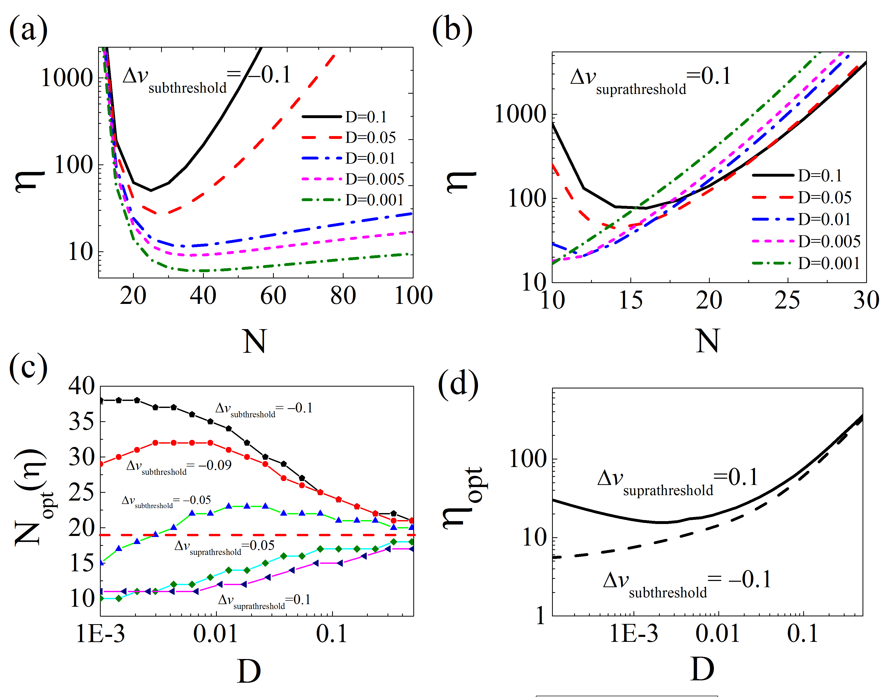

Energy-efficient population coding constraints network size of a neuronal array system
Related Paper:
- Yu, Lianchun, Chi Zhang, Liwei Liu, and Yuguo Yu. "Energy-efficient population coding constraints network size of a neuronal array system." Scientific Reports 6 (2016): 19369. Download
- Chi Zhang, Liu Li-Wei, Wang Long-Fei, Yue Yuan, and Yu Lian-Chun. "Optimal Size for Maximal Energy Efficiency in Information Processing of Biological Systems Due to Bistability" Chinese Physics Letters 32, no. 11 (2015): 110501. Download
We consider the open issue of how the energy efficiency of the neural information transmission process, in a general neuronal array, constrains the network size, and how well this network size ensures the reliable transmission of neural information in a noisy environment. By direct mathematical analysis, we have obtained general solutions proving that there exists an optimal number of neurons in the network, where the average coding energy cost (defined as energy consumption divided by mutual information) per neuron passes through a global minimum for both subthreshold and superthreshold signals. With increases in background noise intensity, the optimal neuronal number decreases for subthreshold signals and increases for suprathreshold signals. The existence of an optimal number of neurons in an array network reveals a general rule for population coding that states that the neuronal number should be large enough to ensure reliable information transmission that is robust to the noisy environment but small enough to minimize energy cost.

Figure: (a) Coding energy cost η as a function of N for ∆vsub= −0.1 in the cases of different noise intensities. (b) η vs. N for ∆vsupra = 0.1 in the cases of different noise intensities. (c) The optimal neuronal number Nopt vs.noise intensity D for different input signal intensities ∆v. (d) The minimum coding energy cost ηopt vs. the optimal neuronal number Nopt for different signal intensities ∆v in the case of different input pulse frequencies.